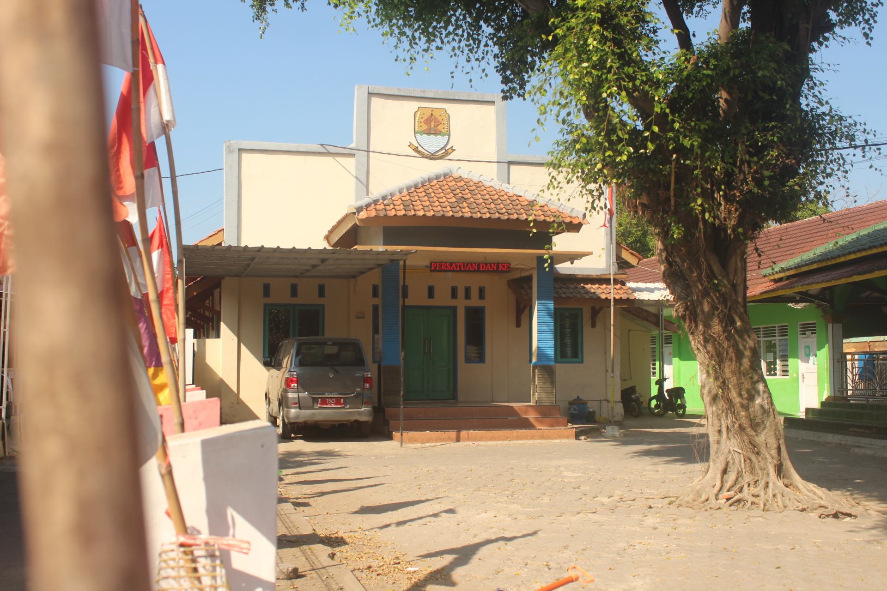
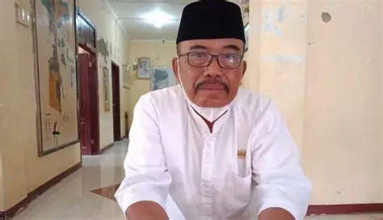
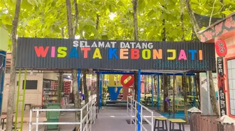

ASAL-USUL
Ciledug
Profil desa mengaitkan asal-usul nama Ciledug dengan kisah Ki Bledug Jaya/Ki Malewang dan tempat latihan yang dikenal dengan unsur “Ledug” dan “Cai”.

KECAMATAN CILEDUG • KABUPATEN CIREBON
Mengenal lebih dekat wilayah, masyarakat, pemerintahan, serta potensi Desa Ciledug Wetan.

SEKILAS DESA
Desa Ciledug Wetan merupakan salah satu desa di Kecamatan Ciledug, Kabupaten Cirebon. Profil desa mencatat luas wilayah sebesar 138,432 Ha dan ketinggian sekitar 12 meter di atas permukaan laut.
Website ini menyajikan informasi publik secara ringkas mengenai desa, pemerintahan, data masyarakat, potensi, fasilitas, dan layanan digital.
Baca sejarah desa →JEJAK SEJARAH
Ringkasan sejarah berdasarkan Profil Desa Ciledug Wetan.
Profil desa mengaitkan asal-usul nama Ciledug dengan kisah Ki Bledug Jaya/Ki Malewang dan tempat latihan yang dikenal dengan unsur “Ledug” dan “Cai”.
Desa Ciledug Wetan mengalami pemekaran wilayah dan kependudukan dengan Desa Ciledug Lor.
Profil desa memuat daftar Kuwu Desa Ciledug Wetan sejak Kamil hingga Wastar.
POTENSI & BUDAYA
Beberapa kesenian dan budaya yang tercatat dalam profil desa.
Lokasi: Blok Desa.
Lokasi: Blok Desa.
Lokasi: Blok Kebon Awi.
Lokasi: Blok Cihoe Kidul.

PEMERINTAHAN DESA
Kuwu Desa Ciledug Wetan
Pemerintahan desa dipimpin oleh Kuwu dan dibantu perangkat desa dalam penyelenggaraan pemerintahan serta pelayanan masyarakat.
STRUKTUR PEMERINTAHAN
FASILITAS DESA
1 Poskesdes & 5 Posyandu
7 sarana pendidikan tercatat dalam profil desa.
3 masjid, 6 mushola, dan 1 madrasah.
LAYANAN DIGITAL DESA
Akses layanan digital yang dikembangkan untuk membantu masyarakat Desa Ciledug Wetan.
Sampaikan laporan mengenai permasalahan sampah di lingkungan sekitar.
Segera HadirGALERI
Tempat menampilkan dokumentasi desa, masyarakat, pemerintahan, dan kegiatan.




LOKASI
Jln. Bale Kabuyutan No. 05, Ciledug Wetan, Kecamatan Ciledug, Kabupaten Cirebon, Jawa Barat 45188.
Plus Code: 3QR2+H9H
Buka di Google Maps ↗KONTAK & INFORMASI
Informasi kontak dan pelayanan Desa Ciledug Wetan.
Ciledug Wetan, Kecamatan Ciledug, Kabupaten Cirebon, Jawa Barat
Kode Pos 45188Nomor telepon resmi desa belum tersedia.
Nomor WhatsApp resmi desa belum tersedia.
Jam pelayanan kantor desa.